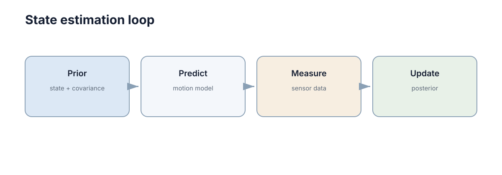

Sensing & State Estimation
机器人真正需要的是位置、速度、姿态和环境状态，但传感器只能提供带噪声的间接测量。状态估计的任务就是把模型预测和传感器观测按照各自的不确定度加权结合**，得到当前最可信的状态，并且诚实地报告这个估计有多可信。
这一章的核心认知链只有一条：先预测、再用残差修正、并且始终跟踪协方差。 无论是线性 Kalman、EKF、UKF 还是因子图优化，都只是这条链在不同模型假设下的实现。理解这条链比记住任何具体滤波器的公式都重要。

不同传感器看到的是不同物理量
编码器测轮子转动，IMU 测角速度和比力，相机测光强形成的图像，LiDAR 测距离。它们通常都不直接等于机器人状态。
例如编码器可以积分得到位移，但轮胎打滑会造成漂移；IMU 高频但积分误差会快速累积；GNSS 或视觉定位漂移慢，却可能更新较慢或偶尔失效。状态估计正是利用这些互补性。
互补性的量化表达是每个传感器在“频域”和“误差增长规律”上的位置：
| 传感器 | 直接测量 | 典型频率 | 主要误差来源 | 误差增长 | 互补价值 |
|---|---|---|---|---|---|
| 轮式编码器 | 轮转角 | 50–200 Hz | 打滑、轮径误差 | 随距离线性 \(\propto s\) | 高频位移 |
| IMU 陀螺 | 角速度 | 100–1000 Hz | 零偏 \(b_g\)、随机游走 | 角度误差 \(\propto t\) | 高频姿态 |
| IMU 加速度计 | 比力 | 100–1000 Hz | 零偏、重力混叠 | 位置误差 \(\propto t^2\) | 短时姿态 |
| 相机（视觉里程计） | 特征像素 | 10–30 Hz | 尺度模糊、纹理缺失 | 缓慢漂移 | 长时平移 |
| LiDAR | 距离/点云 | 10–20 Hz | 几何退化、动态物体 | 环境相关 | 尺度与结构 |
| GNSS | 绝对位置 | 1–10 Hz | 多路径、遮挡 | 无漂移但有跳变 | 绝对锚点 |
误差增长的阶数是选型的关键判据：位置误差 \(\propto t^2\) 的传感器（纯加速度积分）只能支撑秒级预测，而误差 \(\propto t\) 的陀螺可以支撑数十秒姿态推算。这就是为什么惯导系统的“自主导航时长”几乎完全由陀螺零偏决定。
只有观测不够，还要有预测
若上一时刻估计为 \(\hat x_{k-1}\)，控制输入为 \(u_{k-1}\)，模型先产生预测
随后传感器给出观测
其中 \(v_k\sim\mathcal N(0,R_k)\) 是测量噪声。估计器根据预测和观测之间的差异进行修正。预测让系统在短时间没有新观测时仍能前进，观测则防止模型误差无限累积。
这里有一个容易被忽略的量：残差（innovation）
它同时是“观测与预测的差”和“系统健康度的探针”。如果 \(\tilde y_k\) 的统计特性与理论上应该有的协方差 \(S_k\) 不匹配，那么问题一定不在滤波器公式，而在模型或噪声参数。
| 残差现象 | 含义 | 后续动作 |
|---|---|---|
| 均值非零、持续同号 | 存在未建模偏置（外参、零位） | 重新标定或扩展状态维数 |
| 方差明显大于 \(S_k\) | \(R\) 或 \(Q\) 设小了 | 重估噪声参数 |
| 方差明显小于 \(S_k\) | 估计器过度自信 | 上调 \(Q\) 或 \(R\) |
| 完全为零或恒定 | 观测未被真正使用 | 检查门控/丢弃逻辑 |
| 相关性随延迟增长 | 时间戳未对齐 | 检查时钟与插值 |
Kalman Filter 的不确定性加权
线性 Gaussian 条件下，Kalman Filter 的更新可以写成
括号里是 innovation，即“实际观测与预测观测的差”。\(K_k\) 越大，越相信传感器；越小，越相信模型预测。它不是简单取平均，而是根据两边的不确定性自动分配权重。
import numpy as np
def scalar_kalman(x_pred, p_pred, z, r):
k = p_pred / (p_pred + r)
x = x_pred + k * (z - x_pred)
p = (1 - k) * p_pred
return x, p
卡尔曼滤波的预测与更新两步
把 Kalman 拆成两步是理解它的关键，因为预测步让协方差变大，更新步让它变小，这个“呼吸”过程就是信息在流动。
预测步（时间更新）：用系统模型把状态和协方差往前推。
逐项来源解释：
- \(F_k\) 是状态转移矩阵，由物理模型线性化（或直接离散化）得到，例如匀速模型 \(F=\begin{bmatrix}1&\Delta t\\0&1\end{bmatrix}\)；
- \(B_k u_{k-1}\) 是已知控制输入项，若控制器输出可信则保留，若本身带噪则应并入 \(Q\)；
- \(Q_k\) 是过程噪声协方差，代表“模型没告诉我们的那部分变化”，它使 \(P_k^-\) 必然大于上一步的 \(P_{k-1}\)——这就是不确定性的自然增长；
- \(F_kP_{k-1}F_k^\top\) 表示旧的不确定性如何被动力学放大（例如速度不确定性 \(\times\Delta t\) 变成位置不确定性）。
更新步（观测更新）：用观测把不确定性压回去。
逐项来源：
- \(H_k\) 是观测矩阵，把状态映射到观测空间（例如位置观测 \(H=[1\ 0]\)）；
- \(R_k\) 是测量噪声协方差，代表传感器本身的不可信程度；
- \(S_k\) 是 innovation 的理论协方差，它把预测不确定性 \(HP^-H^\top\) 与测量不确定性 \(R\) 相加；
- \(K_k\) 是二者的相对比例，使估计方差最小（这正是最小二乘解）。
增益 \(K\) 的调节含义可以直接从标量情形读出：
它有明确的边界行为：\(R_k\to\infty\)（传感器极不可信）时 \(K\to0\)，估计完全跟随模型；\(P_k^-\to0\)（模型极可信）时 \(K\to0\)，同样跟随模型；只有 \(P_k^-\) 与 \(R_k\) 可比时 \(K\approx0.5\)，才真正“融合”。
| 情形 | 关系 | \(K\) 取值 | 行为 | 风险 |
|---|---|---|---|---|
| 传感器可信、模型差 | \(R\ll P^-\) | \(\to1\) | 几乎直接采用观测 | 模型对异常观测不设防 |
| 模型可信、传感器差 | \(P^-\ll R\) | \(\to0\) | 几乎忽略观测 | 模型偏差无法被纠正 |
| 二者相当 | \(P^-\approx R\) | \(\approx0.5\) | 加权平均 | 正常 |
| 稳态滤波 | \(P^-\) 收敛 | 常数 \(K_\infty\) | 增益饱和 | 参数错则偏差永久存在 |
一个常被忽视的量化事实：滤波精度上限由 \(P_k^-\) 和 \(R_k\) 较小的那一个决定。当 \(R\) 是 \(P^-\) 的 100 倍时，即使传感器再准地更新，估计方差也只能改善约 1%；此时真正的收益来自把模型做好，而不是加更多传感器。反过来，如果 \(R\) 设成真值的 0.01 倍（过度自信），滤波器会疯狂跟随观测噪声，\(\hat x\) 的抖动幅度反而比只用模型更大。
协方差收敛还给出一个工程上的甜点：对线性时不变系统，\(P_k\) 会收敛到 Riccati 方程的不动点，此后 \(K_\infty\) 变为常数。这意味着稳态下可以预计算增益，省掉每步的矩阵求逆，在嵌入式平台上这是最常见的优化手段。
非线性系统仍然沿同一条思路工作
机器人运动和相机观测通常是非线性的。EKF 会在当前估计附近线性化模型：
然后沿用线性 Kalman 的公式。更复杂的方法可以使用 sigma points、粒子或优化，但对初学者最重要的是保持同一认知链：先用模型预测，再用观测残差纠正。
线性化带来两个实际后果：一是估计误差大时线性化点偏离真值，可能出现发散；二是协方差矩阵的数值会因浮点误差失去对称正定性，需要每步做 \(P\leftarrow (P+P^\top)/2\) 的对称化保护。
| 方法 | 建模假设 | 计算量 | 适用场景 | 主要弱点 |
|---|---|---|---|---|
| KF | 线性、Gaussian | \(O(n^3)\) | 线性系统、状态维数 \(<50\) | 非线性时失配 |
| EKF | 可微、局部线性 | \(O(n^3)\) | 里程计+IMU 融合 | 强非线性时发散 |
| UKF | 无需 Jacobian | \(O(n^3)\)，常数 \(\approx 2n+1\) 倍采样 | 姿态、强非线性 | 高维时采样点过多 |
| 粒子滤波 | 任意分布 | \(O(N\cdot n)\)，\(N\) 常取 \(10^2\text{–}10^4\) | 多峰、全局定位 | 维数灾难 |
| 因子图优化 | 全轨迹平滑 | 迭代求解，批量 | SLAM 后端 | 需维护历史，非因果 |
具体滤波器只是实现这条逻辑的不同方式。
多传感器融合的难点往往在滤波器之外
相机、IMU、LiDAR 的时间戳不同、频率不同、坐标系不同。即使 Kalman 公式完全正确，时间没有对齐或外参错误，融合结果仍会漂移甚至发散。
时间对齐的代价可以量化：若两路传感器存在固定延迟 \(\delta=20\) ms，机器人在 \(v=1.5\) m/s 下运动，未补偿延迟会引入 \(v\delta=3\) cm 的系统性位置偏差；在 \(v=5\) m/s（无人机或高速车）下变成 10 cm，已经超过很多定位精度指标。因此延迟标定与延迟补偿（按速度外推或状态插值）是必修项。
| 融合层问题 | 量化影响 | 症状 | 排查顺序 |
|---|---|---|---|
| 时间戳未对齐 | \(v\cdot\delta\)，\(\delta=20\) ms → 3 cm@1.5 m/s | 高速时漂移、低速时正常 | 第一优先 |
| 外参错误 | 角度误差 \(\varepsilon\) → 距离 \(d\) 处偏移 \(d\cdot\varepsilon\) | 远距离目标偏移 | 第二优先 |
| 噪声参数错误 | \(R/Q\) 比例错 → \(K\) 错 | 抖动或响应迟滞 | 第三优先 |
| 固定偏置 | 零偏、轮径误差 | 长期单向累积 | 第四优先 |
| 坐标系方向反 | 镜像/反向 | 轨迹呈镜像或倒退 | 与第一并列 |
因此实机调试通常先检查：数据时间是否单调、坐标变换是否正确、噪声参数是否合理、传感器是否存在固定偏置，再调滤波器本身。顺序错了会在错误的地方浪费大量时间。
噪声模型的标定
\(Q\) 与 \(R\) 是所有滤波器的“旋钮”，但它们不是拍出来的，而是可以从数据估计出来的。
测量噪声 \(R\) 的估计（静态法）：让机器人静止不动，采集 \(N\) 个原始观测 \(z_1,\dots,z_N\)。此时状态不变，观测值的波动完全来自噪声，于是
过程噪声 \(Q\) 的估计（残差法）：\(Q\) 代表“模型没预测到的变化”，因此要用模型残差估计。对同一段标定轨迹，比较模型预测 \(\hat x_k^-\) 与后续真实观测经 \(H\) 投影后的差异，去掉已由 \(R\) 解释的部分：
工程上更常用的简化做法：\(Q\) 的标量倍数从 \(10^{-6}\) 扫到 \(10^{-1}\)，选使归一化创新 \(\chi^2\approx 1\) 的那个值。这比手工猜参数可靠得多。
数值例子：设位置传感器读数（单位 m）静止采样 200 次，得到标准差 \(0.02\) m，则 \(R=4\times10^{-4}\ \text{m}^2\)。设模型是一维匀速运动，\(\Delta t=0.1\) s，状态 \([p,v]\)，则
其中 \(q\) 是加速度噪声功率谱密度。若取 \(q=0.5\ (\text{m/s}^2)^2/\text{Hz}\)，则 \(Q\) 的对角元约为 \(1.25\times10^{-5}\)（位置）和 \(5\times10^{-3}\)（速度）。此时稳态增益大约 \(K_p\approx 0.28\)、\(K_v\approx 1.4\)，意味着滤波器主要相信模型的位置预测，但对速度偏差响应很快——这正好符合“位置观测准、速度只能靠模型推”的物理直觉。
| 标定目标 | 数据需求 | 估计方法 | 典型量级 | 验收 |
|---|---|---|---|---|
| 测量噪声 \(R\) | 静止 30–60 s | 静态方差 | 位置 \(4\times10^{-4}\ \text{m}^2\) | \(\chi^2\in[0.8,1.2]\) |
| 过程噪声 \(Q\) | 一段标定轨迹 | 残差协方差 / 扫参 | \(q\approx0.5\) | \(\chi^2\approx1\) |
| 零偏 \(b\) | 静止长段 | 均值 | 陀螺 \(0.01\text{–}0.1°/s\) | 漂移 \(<0.1°/s\) |
| 时间延迟 \(\delta\) | 已知速度往返运动 | 互相关峰位 | 5–50 ms | 残差无速度相关 |
注意一个反直觉但重要的结论：过度调小 \(R\) 不会更准。若把 \(R\) 设成真值的 \(10^{-2}\) 倍，\(K\) 会趋近 1，观测噪声被完整注入状态估计，位置抖动幅度约等于传感器噪声本身，而协方差却报告一个很小的值——这就是下一节要谈的“不一致”。
估计器应该输出不确定性，而不只输出一个数
一个位置估计 \(x=2.0\) m 若没有方差，就无法判断它是非常可靠还是只是粗略猜测。后续规划和安全模块也需要根据不确定性调整行为：定位越不可信，速度和动作范围通常越应该保守。
协方差的工程用法是把它接进决策，而不是只打印出来：
| 消费者 | 用到的量 | 决策规则示例 | 退化表现 |
|---|---|---|---|
| 路径规划 | 位置协方差 \(P_{pp}\) | \(\sigma_p>0.3\) m 时缩小膨胀半径 | 无视不确定性 → 撞障碍 |
| 速度控制 | 速度协方差 | \(\sigma_v\) 大时降速 | 高速下失控 |
| 传感器门控 | innovation 协方差 \(S_k\) | 用 Mahalanobis 距离做外点剔除 | 异常观测污染状态 |
| 安全监控 | 协方差迹 \(\mathrm{tr}(P)\) | 超过阈值触发降级 | 静默失效 |
| 多机协同 | 相对协方差 | 相对定位差时保持间距 | 碰撞 |
外点剔除的标准做法是 Mahalanobis 门控：只有当
时才接受观测，\(m\) 是观测维数，\(\alpha\) 取 0.99 时阈值约为 \(3\sigma\) 对应值（\(m=2\) 时阈值 9.21）。若门控过严，动态场景下会大量丢弃有效观测，导致估计器“饿死”——表现为缓慢跟随或完全不动。
一致性比瞬时误差更严格
估计器偶尔接近真值不代表它可信。若报告的协方差长期小于实际误差，系统会过度相信错误估计。除了位置或姿态误差，还应比较归一化创新等一致性指标，检查估计误差是否与自身声明的不确定性匹配：
在模型与噪声设定正确时，\(\text{NEES}\) 的期望应等于状态维数 \(n\)，\(\text{NIS}\) 的期望应等于观测维数 \(m\)。判据很直接：NEES 显著大于 \(n\) 说明协方差报小了（过度自信），显著小于 \(n\) 说明报大了（过度保守）。
| 一致性指标 | 期望值 | 偏大含义 | 偏小含义 | 常见根因 |
|---|---|---|---|---|
| NEES | \(=n\) | 协方差过小、过度自信 | 协方差过大、钝化 | \(Q\) 或 \(R\) 设错 |
| NIS | \(=m\) | \(R\) 过小或模型偏差 | \(R\) 过大 | 噪声参数未标定 |
| ANEES（时序平均） | \(\in[0.8n,1.2n]\) | 系统性低估不确定性 | 系统性高估 | 未建模动态 |
估计失效的典型现象与排查
大多数“滤波器不工作”的现象都可以被归到有限的几类原因上，排查顺序应遵循“先便宜后昂贵”的原则：先看时间戳，再看坐标系，再看噪声参数，最后才怀疑算法。
| 现象 | 最可能原因 | 先验证什么 |
|---|---|---|
| 估计跟随观测抖动很大 | \(R\) 设得过小，\(K\to1\) | 静止数据估 \(R\)，看 NIS 是否 \(\gg m\) |
| 观测几乎不影响估计 | \(R\) 设得过大或 \(Q\) 极小 | 检查 \(K\) 是否 \(\ll 1\)，看残差是否长期偏置 |
| 平稳运行时缓慢单向漂移 | 未建模偏置（零偏、轮径、外参） | 静止段残差均值是否为 0 |
| 高速时误差变大、低速正常 | 时间戳延迟 \(\delta\) | 估计互相关峰位，算 \(v\delta\) |
| 转弯时误差突增、直行正常 | 轮距 \(L\) 或角速度模型错误 | 原地旋转回环误差 |
| 突然跳变然后慢慢恢复 | 外点被接受，或状态被重初始化 | 检查门控阈值与外点比例 |
| 长期缓慢发散、协方差只减不增 | \(Q\) 过小，模型过度自信 | 看 \(\mathrm{tr}(P)\) 是否单调下降 |
| 数值崩溃（NaN / 非正定） | 矩阵求逆病态或浮点误差累积 | 检查 \(S_k\) 条件数，对 \(P\) 做对称化 |
| 长时间无观测后估计可信度仍高 | 预测步未正确增协方差 | 核对 \(P_k^-=FPF^\top+Q\) 是否真的加了 \(Q\) |
最后一条经验：先对齐时间，再核对坐标系，再标定噪声，最后才调算法。 状态估计的绝大多数“算法问题”，其实是接口问题。
下一步：继续阅读 建图与 SLAM 看估计误差如何在建图中被长期约束，用 路径与运动规划 了解协方差如何进入规划约束，回到 模型、运动学与动力学 补齐预测步所依赖的运动模型，概率基础可参考 条件概率与 Bayes，时间同步细节见 分布式时间。